Post 1 · Night 0 + Thursday
A day ahead of schedule
Night 0 and the first full day: a falling-sand sim pulled into 3D, three looks thrown out, a car made of sand, and a water tower that refused to fall over.

Welcome to BIGGER!, where your job is to come up with the most spectacular SFX you can for each of the movie’s unique scenes. Once the job is done, you are treated to the final film with your best shots. Just remember: the Director always wants you to go BIGGER!
Night 0: sand on screen
When I first heard the theme for this game jam was ‘Director’s Cut’, I was very excited, because I knew I would be able to utilize the theme in two different ways. The first was the one feature that I’ve always had to (Director’s) cut: falling-sand fluid physics and interactions, but in a unique way or direction. The second was integrating it into a movie- and set-based game. The idea was to combine the two into a game where you interact with the falling-sand systems to create your own special effects for different scenes.
As you can see in the images below, I went through some iterations until I had a halfway satisfactory fluid system. I noticed water falling in even bars; Claude found that every grain sped up the same way, and a coin flip fixed it. Claude was excellent for this use case, as it created the sim for me in C++ in a timeframe I would never have managed. Once I was at this point, I knew I had to make it unique and interesting, and differentiate it from other falling-sand games.
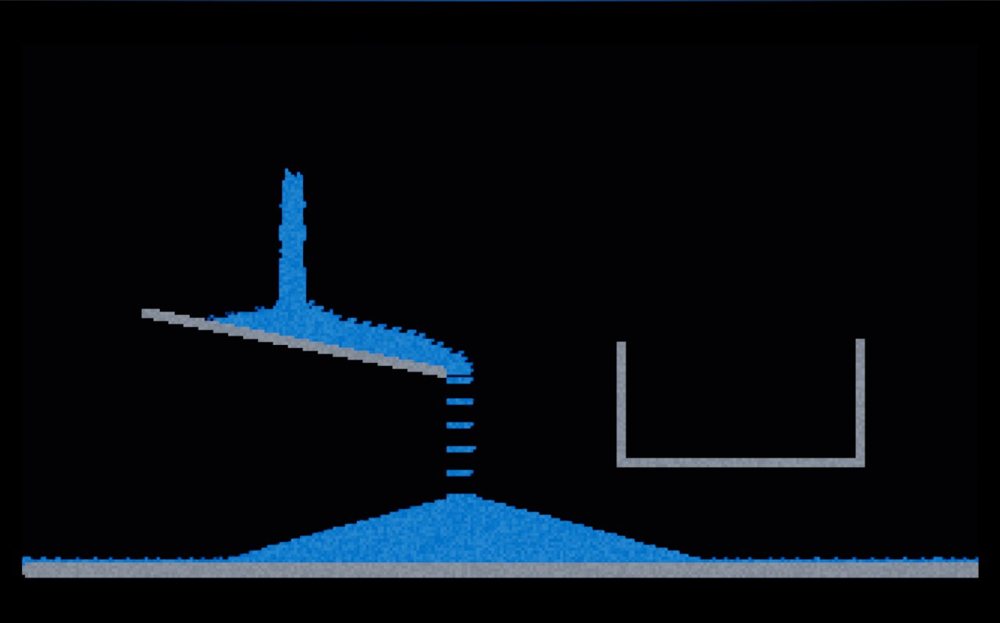
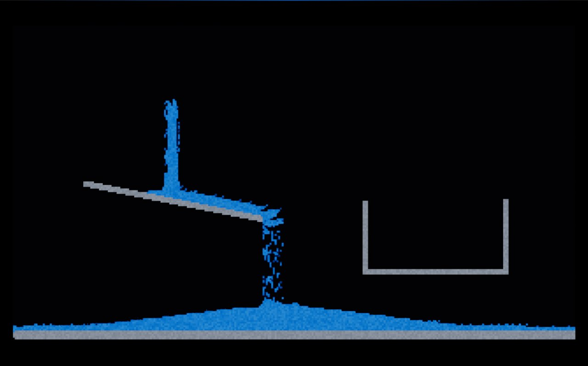
Three looks, all wrong
Two hours into the jam, I had Claude put three looks side by side on one sheet: a miniature diorama, a glossy blockbuster and a clean toon, all running the same frozen frame of the same sim. They were all decent enough, but I immediately knew none of them was what I was going for, or interesting enough. Another issue was that I wasn’t sure how to make SFX creation work from a 2D side view. With both of these concerns in mind, it was clear I had to rethink the look.
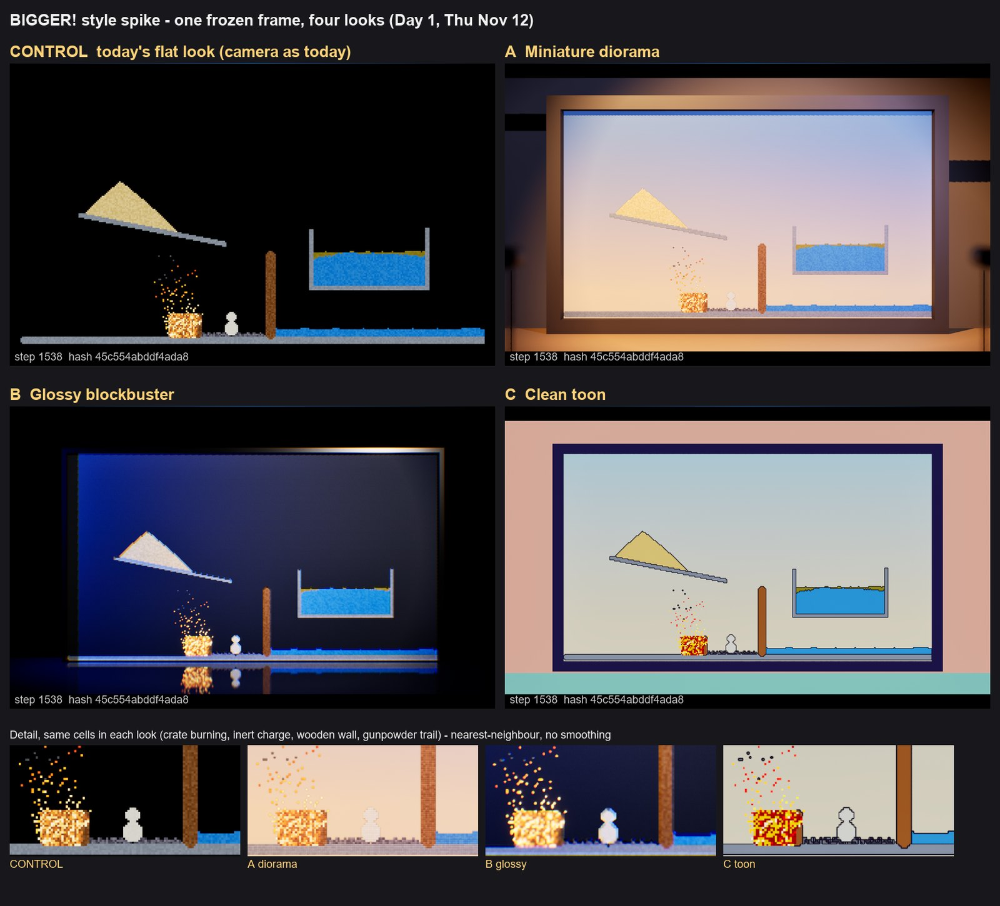
At this point, Claude laid out three ways to bring the sand into 3D and recommended voxels, which is where I’d assumed we’d go. I agreed, with one condition:
Voxel destruction based games are extremely common and the last thing I want is for this to look or play like other games.
Me, talking it through with Claude
I asked Claude for a look sheet of some possibilities and received not-bad results. It drew the 3D sand as clay, tiny grains and smooth toys, but the voxels looked strange (ugly) and also too familiar (cookie-cutter voxel). I started to panic. I wasn’t sure I was going to be able to accomplish the look, or, more importantly, the gameplay I had dreamed up, and I was worried I was going to have to start totally fresh and come up with a new plan.
So I suggested 2D particles in a 3D world. Claude mocked up two versions, and one was a true marriage between the two: a 3D sim drawn as pixel tiles. This look fit almost exactly what I had in my head, while letting us play with falling sand and explosives in 3D.
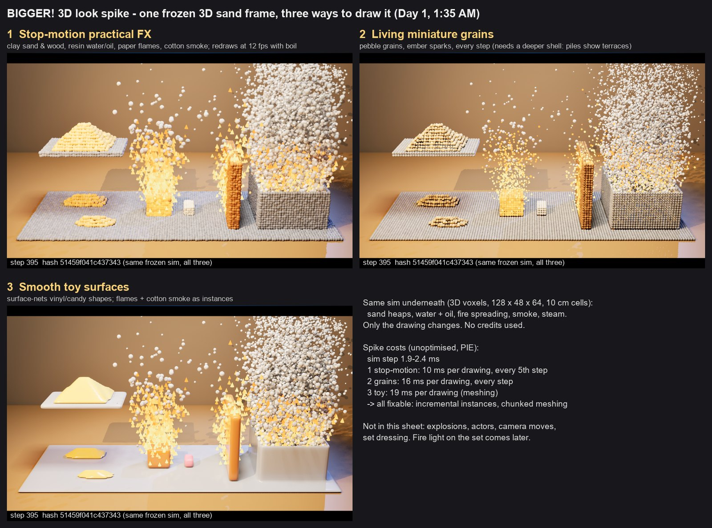
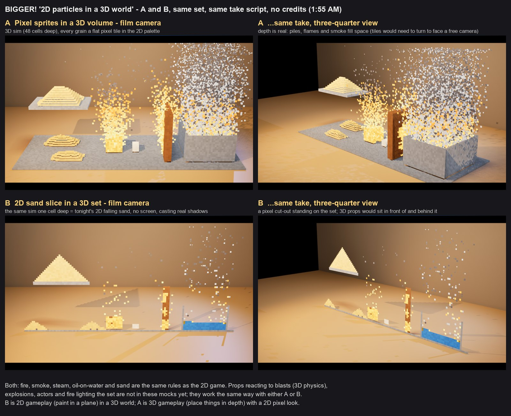
How I work: one conversation per pass
I have three custom Claude skills that I made and utilize throughout this project. They are very simple, but they let me build out each feature or step I have planned methodically and completely.
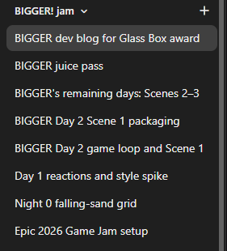
The first is my /pass skill, which breaks what we need to complete into sensible, orderly ‘passes’. Each pass gets its own fresh Claude conversation, at the very least, and usually begins with questions (with recommendations), look-first sheets (if the work is visual), then the build, tests that prove they can fail, and a commit.
The second is my /handoff skill, which I use at the end of each pass, or when the context in a session is getting too large. It makes sure the work in that conversation is buttoned up and documented, creates a handoff document for the next conversation to read (essentially everything needed for that pass), and finally gives me the prompt to start that new conversation with. This workflow also makes it very easy to know where you are in the project, and which conversation holds which piece of the work.
The third is my dev-knowledge plugin (multiple skills), which contains the tips and preferences I’ve learned from using different engines and tools, such as Unreal, Meshy, packaging, etc.
What’s done
Currently, each scene starts with the brief, outlining the scene and the goals to achieve. You then have access to different fluids and explosives to try to create the best SFX you can. When you’re ready, the Director yells ‘Action!’ and you get to see whether your stuntman makes it through in one piece. When you have completed all the scenes, a ‘Director’s Cut’ is re-simulated from each take’s record, showing you your best takes. I also have the basic look and models outlined, created and implemented. Time permitting, I plan to go over everything with a fine-tooth comb, as I haven’t yet spent the time I’d like to on each asset.
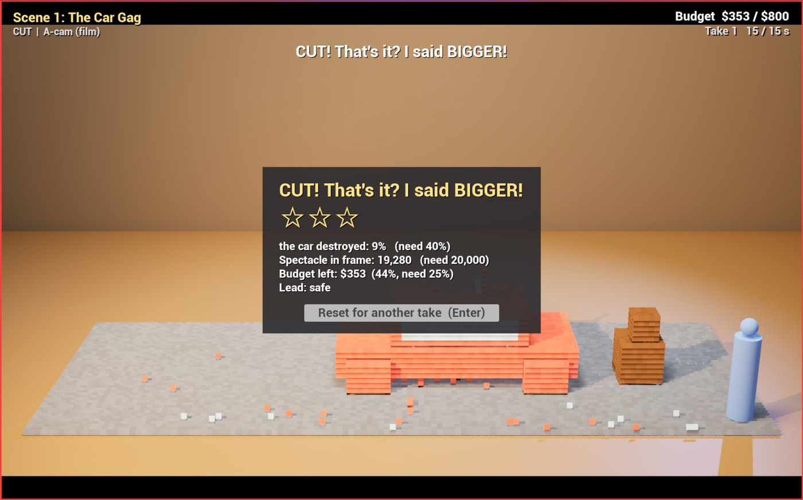
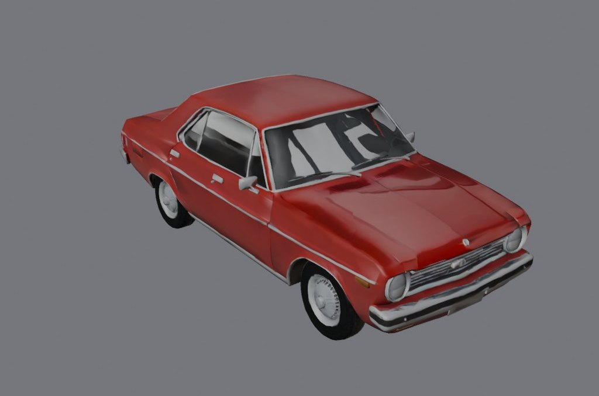
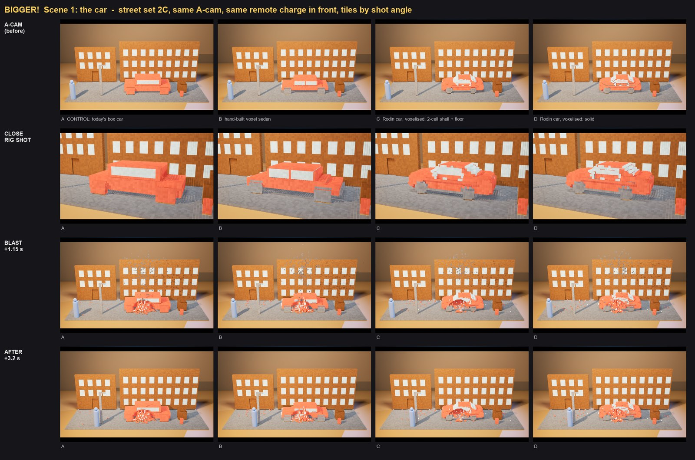
What broke
The tools to create and place your sand and explosives were not at all intuitive or easy to use at first. It has taken constant change and iteration to keep the controls and tools intuitive while making them as dynamic and useful as possible, and I imagine I will continue to iterate on this non-stop until submission. For instance, the Powder Line (fuse) tool was too loose to place and broke its connections regularly (without you being able to tell), leading to an extremely underwhelming scene where only the first chunk of a fuse would burn. I fixed this by making the powder easier to place, and it now shows an orange line through and up to where the fuse will burn. Now it’s easy to tell whether your connections are broken.
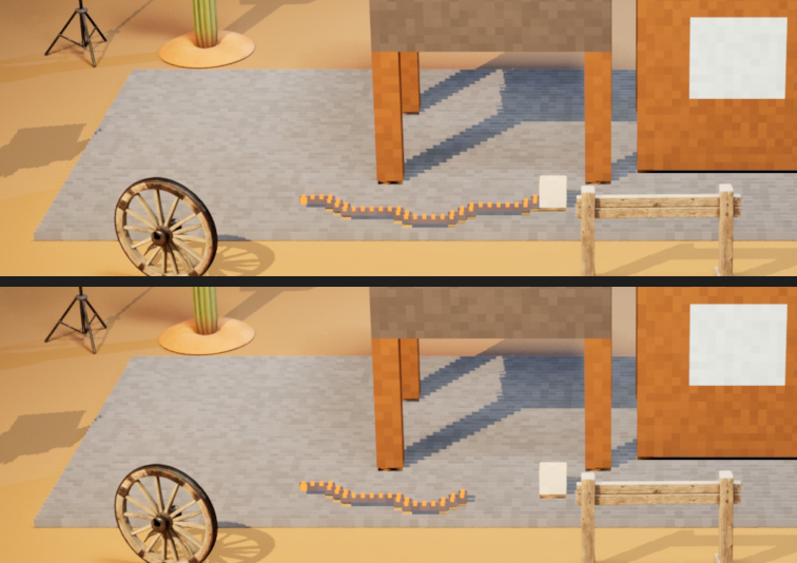
Beyond that, another issue I had was the water tank in Scene 2. With the ability to destroy a raised water tank, you would hope its structure would fracture under stress, fall and break in a satisfying way. This took many attempts to get to a tank that falls the way you’d expect. I blew three of its four legs, and it still stood on the last one. Claude traced it in the code: the tank was holding itself up with its own water. So I asked, “are we able to make it so materials have a stress limit so it would tip over and be destroyed how you expect?” Claude wrote a design for load, tipping and breaks, Fable 5.2 reviewed it before any of it was built, and two spikes later the gag worked: blow the two legs on the saloon side, and the tank tips through the saloon wall, bursts and floods the street. This seems like a perfect use case for Claude, and thanks to how quickly it can iterate and figure out the code or calculations we need, I am able to work until we get the exact destruction I want.
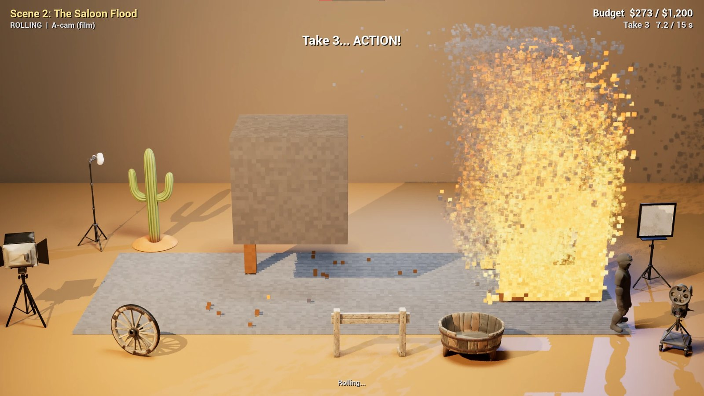
What worries me
I’m having a hard time judging the difficulty of the scenes, and what order they should go in. It’s difficult to drill down into the details and make each one challenging without it being a frustrating experience.
Next
I have the basic gameplay and look of my game. Now I want to make it as fun as possible while ensuring the gameplay is almost self-explanatory. I also want to continue to iterate on, improve and add to whatever models or structures the game has, making it look fully fledged and professional.